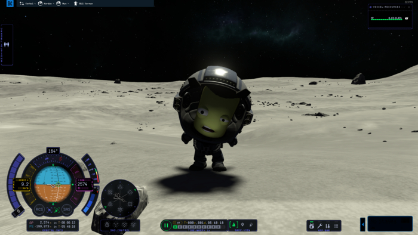
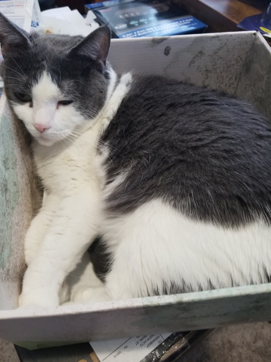
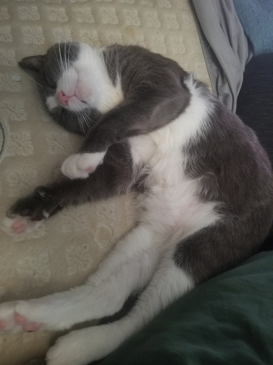

Hi, I'm Matt! I'm a programmer, first and foremost, but also a dabbler in other realms. I started out programming with game development, first by tinkering around in Monogame and Unity, and then by pursuing my Bachelor's of Science in Game Programming and Development from Southern New Hampshire University. I am currently on a web development journey, and I hope to be able to use these skills in my career in the future. My current day job is repairing bowling pinsetters as I continue to build my portfolio and hone my development skills.
I married the love of my life in 2017, and we have been building our life together ever since. She's a talented journalist who has made it her focus to help people, especially those who are disadvantaged by society, to tell their stories. She's also a lovely, kind, and generous woman who I am grateful to have met, and incredibly lucky to be able to call my wife and partner. It's because of her gentle prodding and support that I returned to school to pursue my dreams.
When it comes time to unwind, I enjoy playing games in all their forms. I am particularly drawn to complex games with many potential outcomes, like tabletop war games, strategy board games, and video games like Kerbal Space Program or Factorio. Playing these games can often feel similar to software development, and it's just as fun.
I am one of those people who finds driving to be a great time, and I am almost always up for a cruise. I currently drive a 2022 Hyundai Veloster N, with a manual transmission, and it's such a fun little car. It's far from the fastest thing out there, but it has a spirit and feel to it that just brings a smile to your face. One day I would like to own a Porsche 911, but, truly, I have dream cars in pretty much every monetary bracket... just in case.
My wife and I don't have any human children, yet, but we do have three cat babies! They all love to cuddle with us humans, but aren't really so keen on hanging out with each other. Arya is our oldest. She's only fond of my wife and I, and anyone, and anything, else can hiss off. Frannie is the middle kitten, and she gets a bit jealous, but loves scritches when no other cats are watching her. Artorian is the baby boy and he's always trying to play; with humans, with the other cats (who hate it), and with anything he can find.
 